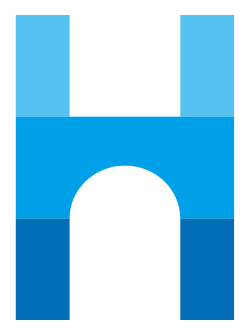

套版範本
FULL SAMPLE依這一組規範畫出來的一整頁：版面、元件與色彩比例都照規範走，可以直接當成交給 AI 的參考。點縮圖開啟完整範本。
Logo 組合方式
LOGO LOCKUP四種組合擇一，標準版與反白版共用同一個選擇；選好後下方版型立即套用。
標準版（淺色背景用）— 用於白色或淺色底
① 完整組合
② 中英組合
③ 標準字

④ 品牌標誌
反白版（深色背景用）— 用於深色或品牌色底，Logo 轉為白色
① 完整組合
② 中英組合
③ 標準字
④ 品牌標誌
Header 版型（依產品 / 族群）
HEADER LAYOUTS九種版型皆含 RWD：≤860px 導覽自動收成漢堡選單（Logo 左、漢堡右，展開為整寬清單），不縮小、不橫向捲動。
從課本裡的一行公式，到看得見的世界
沒有導覽列，用一整屏的主視覺把讀者帶進主題；適合專題報導與單篇長文，不適合功能型頁面。
登入系統
LOGIN翰林登入頁範本：左側品牌視覺+右側帳號/密碼登入，並提供教育雲端帳號、縣市親師生帳號、Google 等 SSO 單一登入。
Header 會員下拉選單（登入後點頭像展開）
Hero Banner
HERO BANNER「歡迎回來」兩種版型，點選採用其一（存進 theme，首頁即套用）。
成卷生成器
auto_awesome智能選題、精準出卷，教師的出題好幫手！
smart_toy基本控制項
BASIC CONTROLSSelect、Label、Button 皆提供「淺色底（品牌色系）/深色底（白色系）」兩種版本；選取狀態一律以顏色輕重表達，禁止以邊線分辨。
科目 *
科目 *
圖示 Icon MATERIAL SYMBOLS
採用 Google Material Symbols 基本樣式；有背景色=色底圓形容器，沒背景色=純圖示。點選採用其一。
試卷已送出給 3 個班級共 96 位學生。
離開前請先儲存草稿，以免內容遺失。
此操作將一併移除所有作答紀錄。
本週日 02:00–04:00 將暫停服務。
表格 Table
DATATABLE / STYLING列表資料一律使用資料表格：工具列（每頁筆數+搜尋）+表身+頁尾（筆數資訊+分頁）。欄位多時手機不出現橫向捲軸、也不等比縮小，而是每筆資料變成直式小表：左邊品牌色欄名格、右邊內容，一筆一卡。
表格樣式 Table Styling 依情境擇一
| 科目 | 已完成 | 平均分 |
|---|---|---|
| 數學 | 28 / 32 | 86 |
| 國文 | 30 / 32 | 81 |
| 英語 | 25 / 32 | 78 |
| 科目 | 已完成 | 平均分 |
|---|---|---|
| 數學 | 28 / 32 | 86 |
| 國文 | 30 / 32 | 81 |
| 英語 | 25 / 32 | 78 |
| 科目 | 已完成 | 平均分 |
|---|---|---|
| 數學 | 28 / 32 | 86 |
| 國文 | 30 / 32 | 81 |
| 英語 | 25 / 32 | 78 |
| 科目 | 已完成 | 平均分 |
|---|---|---|
| 數學 | 28 / 32 | 86 |
| 國文 | 30 / 32 | 81 |
| 英語 | 25 / 32 | 78 |
專案清單 Project List
PROJECT LIST任務/專案型內容以卡片清單呈現：上方狀態頁籤+建立按鈕，卡片含入口圖示、統計、進度條與參與成員。
專案詳情 Project Details 檔案清單 / 活動紀錄
書籤收藏 Bookmark
BOOKMARK APP收藏常用資源：左側依來源切換（我的收藏/我建立的/我的最愛/與我共用）+標籤篩選，右側為資源卡片。
常用命題架構與配分範本，一鍵套用。
依年級整理的課外閱讀文本與題組。
單元對應的教學影片與投影素材。
彈出視窗
POPUP / MODAL置中面板+半透明遮罩的彈窗範本，三種常見型態：確認、表單、警示。點「開啟彈窗」即可預覽。
確認對話框
一般確認 / 提示，主行動用主色。
表單彈窗
在彈窗內填寫欄位後送出。
警示 / 刪除
破壞性操作，主行動用警示紅。
系統 Toast
TOAST系統提示訊息：實心色底藥丸+圖示+訊息+關閉，依語意狀態色（成功/AI/警告/危險/中性）。通常出現在畫面下方、數秒後自動消失。
功能選單
FEATURE MENU大型功能入口卡（勾選採用圖示樣式）
隨機抽題
從翰林智慧題庫自動篩選題目，依課次範圍快速組成試卷。
成卷抽題
上傳 1~5 份考古卷 PDF，讓 AI 解析題目並重新組卷。
AI 出題
輸入單元與難度，AI 直接生成素養導向題組。
匯入題庫
上傳自有題目，統一格式後納入個人題庫。
隨機抽題
從翰林智慧題庫自動篩選題目，依課次範圍快速組成試卷。
成卷抽題
上傳 1~5 份考古卷 PDF，讓 AI 解析題目並重新組卷。
AI 出題
輸入單元與難度，AI 直接生成素養導向題組。
匯入題庫
上傳自有題目，統一格式後納入個人題庫。
橫向選項卡（勾選採用圖示樣式；選取=色塊+填實圓點，不靠邊線）
選擇卷種 *
選擇卷種 *
品牌元件
COMPONENTS點選要納入延伸套用的元件（可複選）
卡片內文說明文字。
選好品牌規範（主色 / Logo / Header / Footer / Hero Banner / 元件...）後，按下確認存進採用設定，並回到視覺套版列表。
色彩系統
COLOR SYSTEM60－30－10：頁面底色佔最大面積，主色撐結構，對比色只在需要被點擊的地方出現。
裝飾色 EXTENDED
來源規範文件裡的其餘色票，只供色塊使用，不承載小字。
採用設定
ADOPTION上面是這一組色版的色票；下面幾項是整份規範的採用設定（行內強調的用法、中間色、灰階、淡色圖示方塊）， 切換色版時會跟著主色連動，但要不要納入規範由你勾選。
可選主題色
選好主色後，系統已配一個「互補對比色」（藍↔暖橘、金↔天青、粉↔青綠...）。對比色主要用在 span/em/mark 等行內文字強調與小標記上（NEW、備註、必填*、限時、重點數字），只點綴、不當主色；你也可以在下方自選。
對比點綴色（點選即套用；「自動」=跟主色互補）
柔色底+深色圖示，用於產品模組、KPI 卡、快捷入口的區隔；切換主題時對比色會連動。
次要文字、圖示、分隔線與底色一律用這三階灰，不要隨手用淺灰帶過。
字體排版
TYPOGRAPHY標題、內文與按鈕的字體、字重與字級，是這一組的一部分——換了字體就不是同一組風格了。下面三行是照規格實際排出來的。
形狀數值
SHAPE OF THIS KIT圓角、陰影、邊線照這一組的來源規範文件，沒有自行取整；下面的間距刻度、RWD 斷點與文字級距則是全站共用，不隨色版改變。
RWD 斷點
RESPONSIVE斷點沿用 Tailwind 標準；多欄轉單欄，表格在手機重新排列成卡片（不是橫向捲軸）(此為開發時要遵循的約定，勾選只代表納入規範，不是功能開關)
單欄堆疊；表格改卡片式；側欄收合為漢堡選單。
雙欄；表格完整顯示；篩選/工具列同排。
多欄網格；側欄固定；儀表板完整版位。
內容最大寬置中留白，避免行長過寬。
文字級距
TYPOGRAPHY形狀與間距
SHAPE & SPACING元件圓角 14px
藥丸 999px
標籤 / chip / 膠囊按鈕
圓形 50%
頭像 / 狀態點 / 圖示鈕
設計方針
PRINCIPLES相信學習
以學習者為中心，傳遞正向、值得信賴的教育感受。
一致性
跨產品沿用同一套色彩、字級與元件，維持品牌識別。
親和力
圓體與柔和藍調，降低學習門檻，貼近師生。
專業可靠
清晰的資訊層級與留白，呈現內容的專業度。